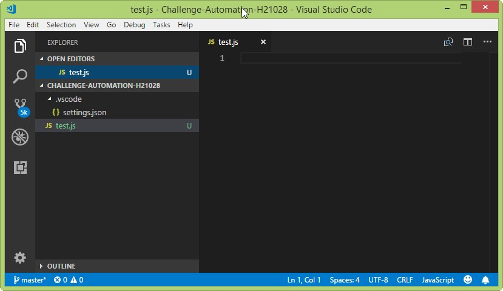

Content of challenge¶
Install the necessary software/packages¶
[1] Install nodejs
Based on your OS (Windows, Mac OS, Linux/Unix), let download
Check install successfully or not by run command
$ C:\Users\hoa-nguyen.CB>node -v
v8.11.3
$ C:\Users\hoa-nguyen.CB>npm -v
5.6.0
[2] Install IDE In this session, we will use "Visual Studio Code" Based on your OS (Windows, Mac OS, Linux/Unix), let download at here Target:support in writing code/programming
Quick Start¶
- Create a folder e.g Challenge-Automation-H21028
-
Create a new file e.g test.js
$ cd e:\project $ e: # mkdir Challenge-Automation-H21028 # touch test.js -
Open test.js by "Visual Studio Code" 